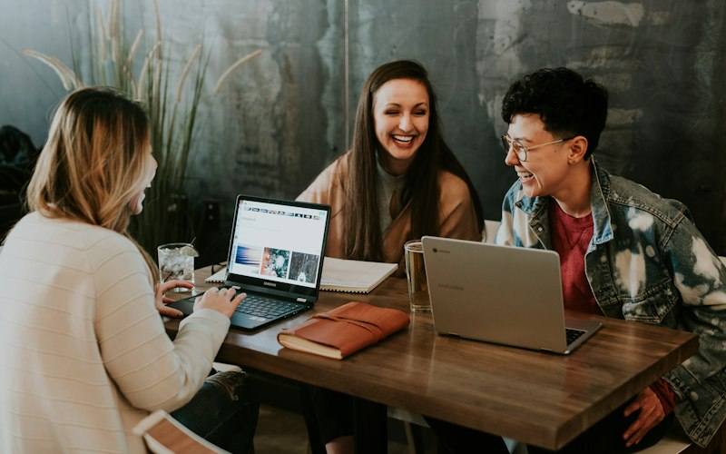

Aprende,descarga, consulta.
Noticias, publicaciones y documentos de transparencia de la fundación, reunidos en un solo lugar.
Blog y noticias
Lo últimode la red.
Calidad
Nos certificamos en el Esquema Nacional de Seguridad (ENS)
Tercer sectorSAAD: asesoría digital gratuita para las entidades sociales
FormaciónCurso de TRIC aplicadas a la educación no formal en Madrid
InfanciaCampamentos tecnológicos de verano en Madrid y Galicia
VoluntariadoLa nueva red de personas voluntarias arranca su acompañamiento
InternacionalNuevo proyecto Erasmus+ para la inclusión digital en Europa
Publicaciones
Para leery compartir.
Memorias, guías y materiales que elaboramos a partir de nuestro trabajo.
PDF
Memoria anual de actividades
Lo que hicimos durante el año, con quién y con qué resultados.
Descargar → GuíaGuía de competencias digitales
Material de apoyo para formadores y personas voluntarias.
Descargar → GuíaDigitalización del tercer sector
Claves prácticas para que las entidades sociales den el salto digital.
Descargar →
Transparencia
Cuentasclaras.
Rendir cuentas es parte de nuestro compromiso con las personas, las entidades y las instituciones que confían en nosotros.
Campus Virtual
Aprende a turitmo.
Cursos online de competencias digitales y formación para la inserción laboral, con acompañamiento de nuestro equipo.
Siguiente
Ir a contacto →